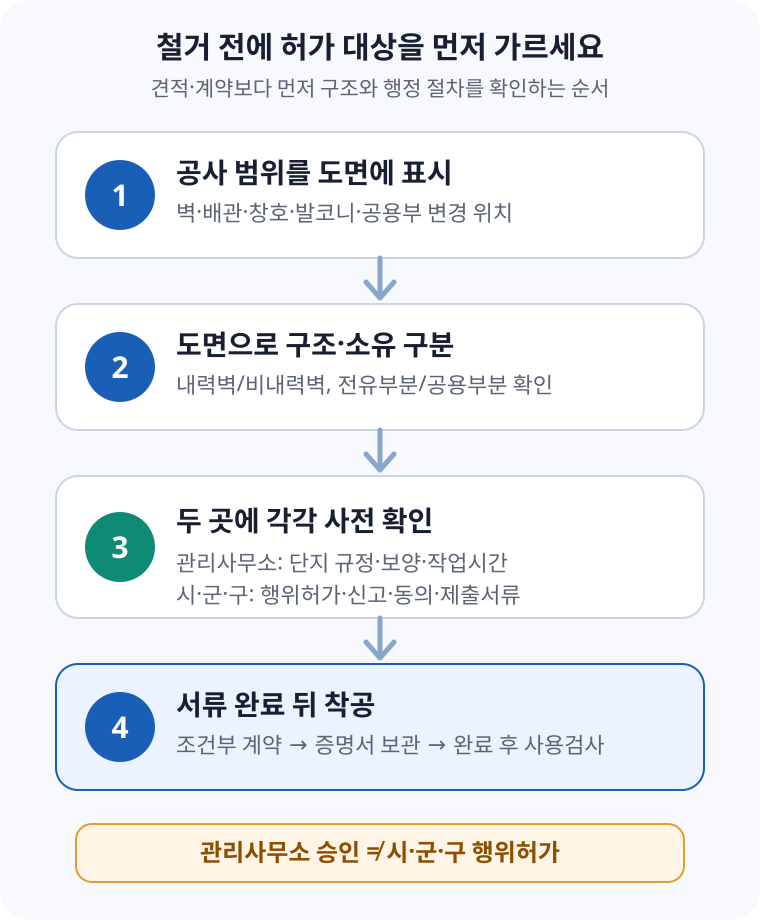

아파트 인테리어 공사 전 행위허가·신고 — 철거 전에 확인할 기준
아파트 공사는 ① 단순 마감재 교체인지, ② 벽·배관·창호·발코니·공용부분을 건드리는지부터 나눠야 합니다. 관리사무소에 공사 신고를 했다고 시·군·구의 행위허가나 신고까지 끝난 것은 아닙니다. 철거 위치를 도면에 표시한 뒤 관리사무소와 관할 시·군·구에 각각 확인하고, 필요한 동의와 증명서를 갖춘 다음 착공하세요.
1. ‘인테리어 승인’이라는 말부터 세 갈래로 나눈다
현장에서는 관리사무소에 서류를 내는 일을 통틀어 ‘인테리어 승인’이라고 부르곤 합니다. 하지만 실제로는 서로 목적이 다른 절차가 겹칠 수 있습니다.
| 구분 | 확인하는 곳 | 주로 보는 내용 |
|---|---|---|
| 단지 공사 절차 | 관리사무소·관리주체 | 작업시간, 소음 안내, 엘리베이터 사용, 공용부 보양, 폐기물 반출 |
| 행위허가·신고 | 관할 시·군·구 | 용도변경, 증축·대수선, 파손·철거, 세대구분 등 법정 대상 여부 |
| 별도 기술 기준 | 관할 부서·전문가 | 구조, 소방, 피난, 설비, 발코니 확장처럼 함께 검토할 기준 |
공동주택관리법 제35조는 공동주택의 용도변경, 증축·대수선, 파손·철거, 세대구분 등 일정한 행위를 하려면 시장·군수·구청장의 허가를 받거나 신고하도록 정합니다. 시공자와 감리자도 착공 전에 해당 허가·신고 여부를 확인해야 합니다.
2. 공사 이름보다 ‘무엇을 건드리는지’로 구분한다
공동주택관리법 시행규칙 제15조는 창틀·문틀 교체, 세대 내부 천장·벽·바닥의 마감재 교체, 급·배수관과 난방설비의 교체 등 일부를 경미한 행위로 열거합니다. 그러나 상품명이나 업체 견적서의 공정명만으로 대상 여부가 확정되지는 않습니다. 벽체 철거, 슬래브 천공, 공용 배관 연결처럼 실제 시공 범위가 달라지면 판단도 달라질 수 있습니다.
| 계획한 공사 | 법령상 출발점 | 계약 전 확인할 것 |
|---|---|---|
| 도배·장판·마루 등 마감재 교체 | 시행규칙상 경미한 행위에 해당할 수 있음 | 단지 작업시간·소음·보양·폐기물 절차 |
| 창틀·문틀 교체 | 경미한 행위에 열거 | 외관·공용부분 영향, 창호 사양, 철거 범위 |
| 세대 내 급·배수관 또는 난방설비 교체 | 단순 교체는 경미한 행위에 열거 | 공용 입상관, 바닥 천공, 배관 위치 변경 여부 |
| 비내력벽 철거 | 파손·철거 관련 행위허가 기준 확인 | 비내력벽임을 증명할 도면·사진, 필요한 동의 |
| 내력벽에 배관설비 설치·벽체 변경 | 대수선 등 허가 기준 검토 | 구조 안전, 동의 대상, 허용 범위를 관할청에 사전 확인 |
| 발코니 확장·외벽 또는 공용부 변경 | 행위허가 외 건축·소방 기준도 함께 검토 | 도면과 제품 사양으로 관할 부서의 서면 안내 확인 |
표는 빠른 분류를 위한 출발점입니다. 같은 공사명이라도 공동주택 종류, 전유·공용부분 구분, 벽체 구조, 철거 범위에 따라 달라질 수 있습니다. 업체의 “다들 그냥 한다”는 설명 대신 도면과 공사내역서를 관할청에 제시해 확인하세요.
3. 주민 동의는 비율만 보지 말고 ‘누구의 동의인지’ 본다
공동주택관리법 시행령 제35조와 별표 3은 행위 종류와 위치에 따라 허가·신고 기준과 동의 범위를 달리 정합니다. 예를 들어 공동주택 대수선은 원칙적으로 해당 동 입주자 3분의 2 이상 동의 기준이 적용되고, 내력벽에 배관설비를 설치하는 경우에는 해당 동에 거주하는 입주자등 2분의 1 이상이라는 별도 기준이 있습니다. 구조안전에 이상이 없는 시설물 철거도 전유부분과 공용부분, 비내력벽 여부에 따라 기준이 갈립니다.
여기서 ‘입주자’와 ‘입주자등’은 같은 말이 아닙니다. 소유자와 실제 거주 사용자를 가리키는 범위가 다를 수 있으므로, 인터넷에서 본 동의서 양식을 그대로 돌리기 전에 담당 부서에 대상 세대와 서명권자를 확인해야 합니다.
4. 도면과 공사내역서를 먼저 만들면 신청이 빨라진다
비내력벽을 철거하려면 그 벽이 비내력벽임을 증명하는 서류가 필요합니다. 시행규칙은 평면도·단면도 등 도면과 현장 사진을 예로 들고 있으며, 별표 3에 따라 동의가 필요한 경우에는 그 동의서도 함께 제출하도록 정합니다. 구두 설명만으로는 담당자가 구조와 범위를 판단하기 어렵습니다.
- 변경 전·후 도면 — 철거·신설 벽, 배관 이동, 창호 변경 위치를 색으로 구분
- 구조 확인 자료 — 벽체 종류를 확인할 구조도면, 평면·단면도와 현장 사진
- 상세 공사내역 — 철거 방법, 장비, 작업시간, 폐기물 반출, 공용부 보양 계획
- 동의서 — 관할청이 안내한 대상·비율·서명권자와 소음 공사의 기간·방법 반영
- 시공자 자료 — 실제 작업 업체와 책임자, 보험·등록·자격 등 요구 자료 확인
정부24 공동주택 행위허가 안내에는 온라인·방문·우편 신청, 처리기간 총 10일, 수수료 없음으로 안내돼 있습니다. 다만 보완 요청 기간과 동의 수집 시간은 별도이므로 공사 시작일을 10일에 딱 맞추지 마세요. 접수처와 실제 제출서류는 소재지 시·군·구 담당 부서에 다시 확인하는 편이 안전합니다.

5. 견적·계약에는 ‘허가 전 철거 금지’를 남긴다
가장 큰 손실은 허가가 필요한 범위를 확정하지 않은 채 철거일과 잔금을 약속할 때 생깁니다. 견적서는 마감재만이 아니라 철거·구조·설비 공정을 분리하고, 계약서에는 허가 또는 신고 수리가 늦어지거나 공사 범위가 바뀔 때의 일정·금액 조정 방식을 적으세요.
특약은 예를 들어 “비내력벽 철거 및 관련 공정은 관할청 행위허가 또는 신고 수리와 관리주체 절차 완료 후 착수한다”처럼 조건을 분명히 적을 수 있습니다. 다만 실제 계약 문구와 해지·손해배상 범위는 거래 조건에 따라 달라지므로 금액이 크거나 분쟁 가능성이 있으면 법률 전문가의 검토를 받으세요.
6. 사례 — 주방 옆 비내력벽을 철거하려는 경우
30년 된 아파트에서 주방 옆 작은방과 거실 사이 벽을 없애려 한다고 가정해 보겠습니다. 인테리어 업체가 현장만 보고 비내력벽이라고 말해도 바로 철거해서는 안 됩니다.
- 관리사무소나 보유 도면에서 구조 관련 도면을 확보하고 철거 위치를 표시한다.
- 도면과 현장 사진으로 비내력벽이라는 점을 확인할 수 있는 자료를 준비한다.
- 관할 시·군·구에 전유부분 시설물 철거로 보아 어떤 동의와 서류가 필요한지 확인한다.
- 관리사무소에는 별도로 소음 안내, 엘리베이터·공용부 보양과 폐기물 반출 절차를 접수한다.
- 허가증 또는 신고 수리 증명과 관리주체 확인을 받은 뒤 철거하고, 완료 후 사용검사 대상이면 그 절차까지 마친다.
중간에 벽 속 공용 배관이나 전기·통신 설비가 발견되면 처음 확인한 범위를 벗어날 수 있습니다. 현장에서 임의로 우회하거나 절단하지 말고 작업을 멈춘 뒤 관리주체와 담당 부서에 변경 내용을 다시 확인해야 합니다.
7. 착공 전에 마지막으로 확인할 체크리스트
- □ 철거·신설·배관·창호 변경 위치를 변경 전·후 도면에 표시했다.
- □ 내력벽·비내력벽과 전유부분·공용부분을 자료로 확인했다.
- □ 관리사무소의 단지 공사 절차를 확인했다.
- □ 관할 시·군·구에 행위허가·신고 대상과 담당 부서를 확인했다.
- □ 동의가 필요하면 대상·비율·서명권자와 동의서 기재사항을 확인했다.
- □ 허가·신고 보완에 대비해 공사일을 여유 있게 잡았다.
- □ 계약서에 허가 전 착공 금지와 보완·불허 때의 정산 기준을 적었다.
- □ 완료 후 사용검사와 준공 자료 인도 여부를 확인했다.
공식 자료 및 참고자료
- 국가법령정보센터 — 공동주택관리법 제35조(행위허가 기준 등)
- 국가법령정보센터 — 공동주택관리법 시행령 제35조
- 국가법령정보센터 — 시행령 별표 3(허가 또는 신고의 기준)
- 국가법령정보센터 — 공동주택관리법 시행규칙 제15조
- 정부24 — 공동주택 행위허가 신청 안내
- 찾기쉬운 생활법령정보 — 아파트 구조 변경 공사
정보 기준일: 2026-09-05. 이 글은 일반적인 정보 제공용이며 개별 공사의 법률·구조·소방 판단을 대신하지 않습니다. 실제 허가 대상과 제출서류는 건물 현황, 공사 범위, 관할 지자체의 확인에 따라 달라질 수 있습니다.
공사 계약 전에 같이 확인할 도구
- 인테리어 자재 가이드자재 선택부터 견적·계약·하자 처리까지 한 번에 보기
- 체크리스트계약과 입주 일정에서 빠뜨릴 일을 단계별로 확인